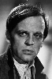

Country:Germany, 92 minutes
Spoken languages:German
Genres:Drama, Thriller
Director(s):Jesús Franco
Writer(s):Jesús Franco
Video Codec:Unknown
Number: 2688


Certification:R
Storyline:
A serial killer whose mother was a prostitute starts killing streetwalkers as a way of paying back his mother for her abuse.
Cast: 


Medium: Original DVD,
Loaned: No
Aspect ratio: Unknown